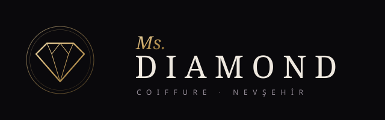
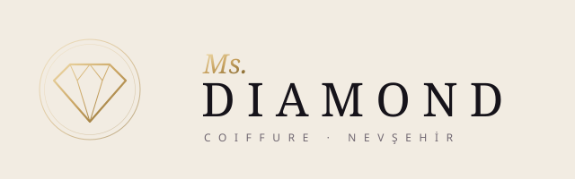
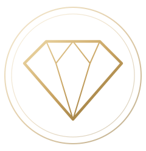

Koyu zemin · SVG indir

Açık zemin · SVG indir

Amblem (profil fotoğrafı, ikon) · SVG indir
Noir · #0A090C
Fildişi · #F2ECE2
Altın · #C9A462 (açık #EED9A8 · koyu #8A6C33)
Ametist vurgu · #7652B4 (sadece ışık efektlerinde)